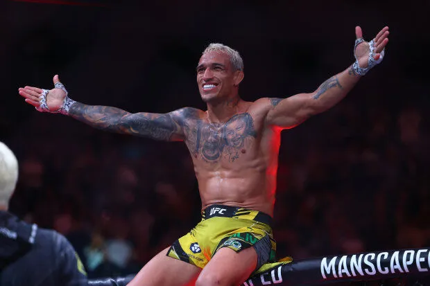

De donde es?
Charles Oliveira es de Guarujá, en el estado de São Paulo, Brasil (creció en la favela de Vicente de Carvalho). Nació allí el 17 de octubre de 1989. [1, 2]
.jpg)
Cuantos titulos tiene y cual es su record?
Charles Oliveira tiene un récord profesional de 37 victorias, 11 derrotas y 1 pelea sin resultado (37-11-0, 1 NC) y ha ganado 1 campeonato mundial indiscutido de peso ligero de la UFC, además del título simbólico BMF
Campeón de Peso Pluma
Campeón BMF (Baddest Motherfucker)
.jpg)
Por que es peleador?
Charles Oliveira se convirtió en peleador para alejarse de la violencia y las drogas de las favelas, superar una grave enfermedad infantil que casi lo deja en silla de ruedas, y sacar a su familia de la pobreza extrema en Brasil.
Oliveira se enamoró del jiu-jitsu de inmediato y ganó su primer campeonato estatal apenas un mes después de empezar a entrenar. Al ver que podía ganarse la vida compitiendo y ayudar económicamente en casa, convenció a su madre —quien al principio odiaba los deportes de contacto— de dejarlo pelear. A los 18 años debutó profesionalmente en las MMA ganando un torneo de tres peleas en una sola noche
.jpg)